第十一课：ESP32-S3 外设控制器与底层驱动开发
这一课开始进入真正的硬件驱动开发。
前面我们学习了 CPU、寄存器、中断、DMA、FreeRTOS、内存、网络和固件构建。现在要把这些知识结合起来，理解 ESP32-S3 如何控制外部电路。
本课始终以 Seeed XIAO ESP32S3 普通版 为开发对象，不把 Sense 版的摄像头接口配置混入普通版。
本课重点：
- GPIO Matrix 和 IO MUX。
- GPIO 寄存器与输入输出。
- UART 串口控制器。
- I2C 通信控制器。
- SPI 控制器。
- LEDC PWM。
- RMT 脉冲控制。
- ADC 模数转换。
- GPTimer 定时器。
- DMA 与外设数据传输。
- 如何独立开发 ESP-IDF 驱动。
一、ESP32-S3 外设系统的整体架构
首先要理解：ESP32-S3 并不是 CPU 直接控制所有外部设备。
芯片内部集成了大量专用外设控制器。
例如：
- GPIO 控制器负责输入输出电平；
- UART 控制器负责串行通信；
- I2C 控制器负责 I2C 总线；
- SPI 控制器负责高速串行通信；
- LEDC 控制器负责 PWM；
- ADC 控制器负责模拟信号转换；
- RMT 控制器负责精确脉冲序列；
- GPTimer 负责硬件定时。
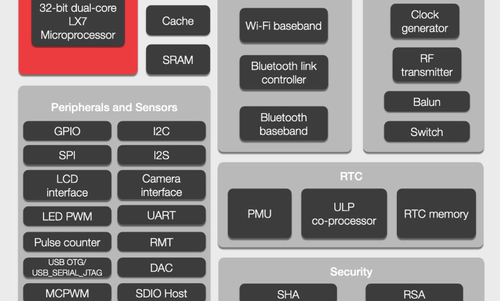
1. CPU 与外设之间如何协作？
例如，你想让 XIAO ESP32S3 点亮一个 LED。
整个过程大致是：
C 语言程序
↓
ESP-IDF GPIO API
↓
GPIO 驱动
↓
GPIO 寄存器
↓
GPIO 输出控制电路
↓
GPIO 引脚输出高电平
↓
LED 电路
↓
LED 点亮CPU 并不需要自己产生每一个电压变化，而是配置外设寄存器，由 GPIO 硬件完成输出。
2. 什么是寄存器？
寄存器是芯片内部用于配置和控制硬件的特殊存储单元。
例如 GPIO 输出寄存器可以控制引脚输出状态。
一个外设通常具有：
| 寄存器类型 | 作用 |
|---|---|
| Configuration | 配置工作模式 |
| Control | 控制外设运行 |
| Status | 读取工作状态 |
| Data | 读取或写入数据 |
| Interrupt | 配置和清除中断 |
你之前学习过 CPU 寄存器，这里需要区分：
- CPU 通用寄存器：CPU 执行指令时使用。
- 外设寄存器：控制芯片内部硬件模块。
二、GPIO Matrix：ESP32-S3 为什么可以灵活分配引脚？
这是 ESP32-S3 很有特色的硬件设计。
普通微控制器有时会将某个外设功能固定在特定引脚上。
ESP32-S3 具有 GPIO Matrix，可以将许多外设信号灵活路由到可用 GPIO。
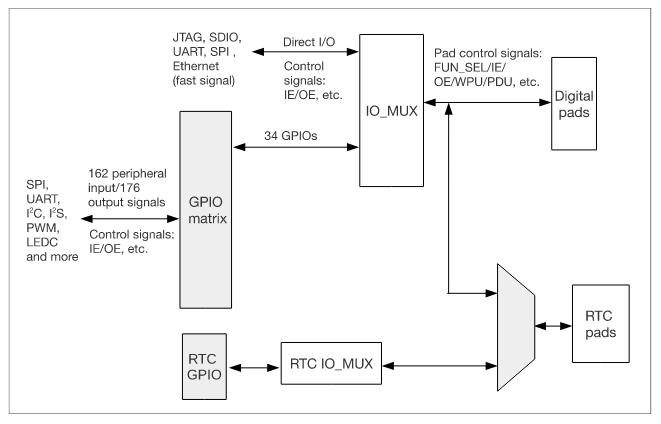
1. GPIO Matrix 的作用
假设你有一个 UART 外设：
UART TX
UART RXGPIO Matrix 可以将 UART 信号路由到合适的 GPIO 引脚。
例如：
UART TX ───── GPIO43
UART RX ───── GPIO44又可以在其他条件允许时配置成：
UART TX ───── GPIO1
UART RX ───── GPIO2这里是信号路由示意，不表示所有引脚组合都适合实际电路。
2. IO MUX 是什么？
IO MUX 是引脚功能复用控制器。
它负责选择引脚使用的功能，例如：
- GPIO；
- UART；
- SPI；
- I2C；
- 特定外设信号。
GPIO Matrix 和 IO MUX 配合，使 ESP32-S3 可以灵活安排外设信号。
3. XIAO ESP32S3 的引脚对应关系
普通版 XIAO ESP32S3 常用引脚：
| XIAO 引脚 | ESP32-S3 GPIO | 常见用途 |
|---|---|---|
| D0 | GPIO1 | GPIO / ADC |
| D1 | GPIO2 | GPIO / ADC |
| D2 | GPIO3 | GPIO / ADC |
| D3 | GPIO4 | GPIO / ADC |
| D4 | GPIO5 | I2C SDA |
| D5 | GPIO6 | I2C SCL |
| D6 | GPIO43 | UART TX |
| D7 | GPIO44 | UART RX |
| D8 | GPIO7 | SPI SCK |
| D9 | GPIO8 | SPI MISO |
| D10 | GPIO9 | SPI MOSI |
实际使用前仍需检查板卡原理图、板载电路、USB 和启动相关功能，以及当前项目的引脚占用。
重要原则：一个 GPIO 不应该同时被两个互相冲突的外设占用。
三、GPIO 底层原理：让 XIAO ESP32S3 控制 LED
先从最简单的 GPIO 开始。
GPIO 有两种主要工作模式：
- Input：输入；
- Output：输出。
1. GPIO 输出原理
当 GPIO 配置为输出模式时：
CPU
↓
GPIO 输出寄存器
↓
GPIO 驱动电路
↓
引脚输出高电平或低电平例如：
- 输出高电平：接近芯片供电电压；
- 输出低电平：接近 GND。
ESP32-S3 GPIO 属于 3.3V 逻辑，不能把 5V 信号直接输入普通 GPIO。
2. 实际接线
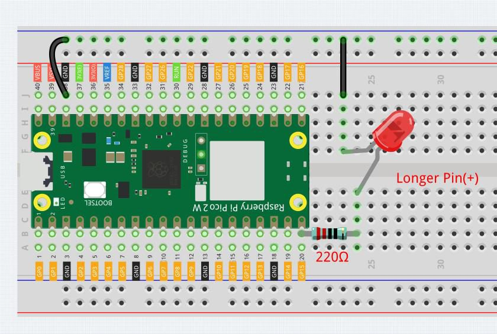
使用：
- XIAO ESP32S3；
- LED；
- 330Ω 电阻；
- 杜邦线。
接线：
XIAO GPIO1
|
330Ω
|
LED 正极
|
LED 负极
|
GND电阻可以使用 220Ω～1kΩ 的合适值，但还需要考虑 LED 正向压降和 GPIO 输出电流限制。
3. ESP-IDF GPIO 示例
#include "driver/gpio.h"
#include "freertos/FreeRTOS.h"
#include "freertos/task.h"
#define LED_GPIO GPIO_NUM_1
void app_main(void)
{
gpio_config_t config = {
.pin_bit_mask = 1ULL << LED_GPIO,
.mode = GPIO_MODE_OUTPUT,
.pull_up_en = GPIO_PULLUP_DISABLE,
.pull_down_en = GPIO_PULLDOWN_DISABLE,
.intr_type = GPIO_INTR_DISABLE
};
ESP_ERROR_CHECK(gpio_config(&config));
while (1) {
gpio_set_level(LED_GPIO, 1);
vTaskDelay(pdMS_TO_TICKS(500));
gpio_set_level(LED_GPIO, 0);
vTaskDelay(pdMS_TO_TICKS(500));
}
}运行后 LED 每 500ms 切换一次状态。
4. GPIO 输入原理
例如连接一个按钮：
3.3V
|
上拉电阻
|
GPIO 输入 ─── 按钮 ─── GND按钮松开时，GPIO 读取高电平。
按钮按下时，GPIO 读取低电平。
代码：
#include "driver/gpio.h"
#define BUTTON_GPIO GPIO_NUM_2
void button_init(void)
{
gpio_config_t config = {
.pin_bit_mask = 1ULL << BUTTON_GPIO,
.mode = GPIO_MODE_INPUT,
.pull_up_en = GPIO_PULLUP_ENABLE,
.pull_down_en = GPIO_PULLDOWN_DISABLE,
.intr_type = GPIO_INTR_DISABLE
};
ESP_ERROR_CHECK(gpio_config(&config));
}
int button_read(void)
{
return gpio_get_level(BUTTON_GPIO);
}注意：实际按钮还需要考虑硬件或软件消抖，避免一次按下产生多次触发。
四、GPIO 中断：如何不用不断读取按钮？
前面我们使用：
gpio_get_level(BUTTON_GPIO);不断检查按钮状态，这叫轮询。
但还有一种更高效的方法：GPIO 中断。
1. 中断工作机制
当按钮状态变化时，GPIO 硬件可以触发中断。
按钮按下
↓
GPIO 电平发生变化
↓
GPIO 中断控制器
↓
CPU 接收中断
↓
执行中断服务函数
↓
通知业务任务2. ESP-IDF GPIO 中断示例
#include "driver/gpio.h"
#include "freertos/FreeRTOS.h"
#include "freertos/queue.h"
#define BUTTON_GPIO GPIO_NUM_2
static QueueHandle_t button_queue;
static void IRAM_ATTR button_isr_handler(void *arg)
{
uint32_t pin = (uint32_t)arg;
BaseType_t higher_priority_task_woken = pdFALSE;
xQueueSendFromISR(
button_queue,
&pin,
&higher_priority_task_woken
);
if (higher_priority_task_woken) {
portYIELD_FROM_ISR();
}
}
static void button_task(void *arg)
{
uint32_t pin;
while (1) {
if (xQueueReceive(
button_queue,
&pin,
portMAX_DELAY
) == pdTRUE) {
printf("Button GPIO: %lu\n",
(unsigned long)pin);
}
}
}
void app_main(void)
{
button_queue = xQueueCreate(10, sizeof(uint32_t));
gpio_config_t config = {
.pin_bit_mask = 1ULL << BUTTON_GPIO,
.mode = GPIO_MODE_INPUT,
.pull_up_en = GPIO_PULLUP_ENABLE,
.pull_down_en = GPIO_PULLDOWN_DISABLE,
.intr_type = GPIO_INTR_NEGEDGE
};
ESP_ERROR_CHECK(gpio_config(&config));
ESP_ERROR_CHECK(gpio_install_isr_service(ESP_INTR_FLAG_IRAM));
ESP_ERROR_CHECK(
gpio_isr_handler_add(
BUTTON_GPIO,
button_isr_handler,
(void *)BUTTON_GPIO
)
);
xTaskCreate(
button_task,
"button_task",
2048,
NULL,
5,
NULL
);
}这是用于学习中断和队列机制的示例。正式使用时需要考虑队列创建失败、重复中断、按键消抖和 ISR 所调用函数的 IRAM 安全性。
3. 为什么中断函数不能执行复杂操作？
中断服务函数应该尽可能短。
不要在中断中：
- 等待 Wi-Fi；
- 执行 HTTP 请求；
- 操作文件系统；
- 长时间延时；
- 执行复杂图像处理。
推荐方式：
中断负责通知，FreeRTOS 任务负责处理。
五、UART：串口通信控制器的工作原理
UART 是嵌入式开发中最常用的通信接口之一。
在 XIAO ESP32S3 开发中，它主要用于：
- 与电脑进行串口通信；
- 连接 GPS 模块；
- 连接串口传感器；
- 连接其他 MCU；
- 与外部通信模块交换数据；
- 输出系统调试日志。
1. UART 是什么？
UART 全称 Universal Asynchronous Receiver/Transmitter，即通用异步收发器。
它主要使用两根数据线：
| 信号 | 功能 |
|---|---|
| TX | 发送数据 |
| RX | 接收数据 |
| GND | 两个设备共地 |
典型连接：
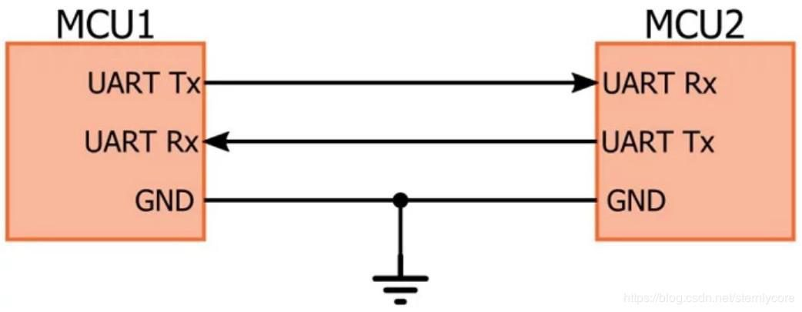
连接规则：
XIAO TX ───── 外部设备 RX
XIAO RX ───── 外部设备 TX
XIAO GND ───── 外部设备 GNDTX 必须交叉连接到对方 RX。
2. UART 为什么叫异步通信？
因为 UART 不需要像 SPI 那样额外传输时钟线。
发送方和接收方提前约定相同的通信参数：
- 波特率；
- 数据位；
- 校验位；
- 停止位。
例如：
115200
8N1含义：
| 参数 | 数值 |
|---|---|
| 波特率 | 115200 |
| 数据位 | 8 |
| 校验位 | 无 |
| 停止位 | 1 |
3. UART 一帧数据如何传输？
假设要发送字符 A。
ASCII 编码：
A = 0x41 = 01000001UART 通常使用：
空闲状态：高电平
起始位：0
数据位：01000001（通常低位先发送）
停止位：1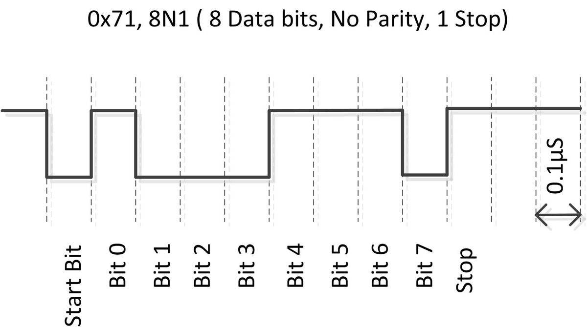
UART 接收端通过起始位识别一帧数据，然后根据约定的波特率采样数据位。
4. 波特率如何影响通信？
波特率表示每秒传输的符号数。
对于普通 UART，每个符号通常对应一个比特时间。
例如：
115200 baud：
约为 8.68 微秒。
如果使用 8N1，每个字节需要：
- 1 个起始位；
- 8 个数据位；
- 1 个停止位。
共 10 个比特时间。
因此理论传输速度：
约 11520 字节/秒，不考虑其他协议开销。
5. UART 内部硬件架构
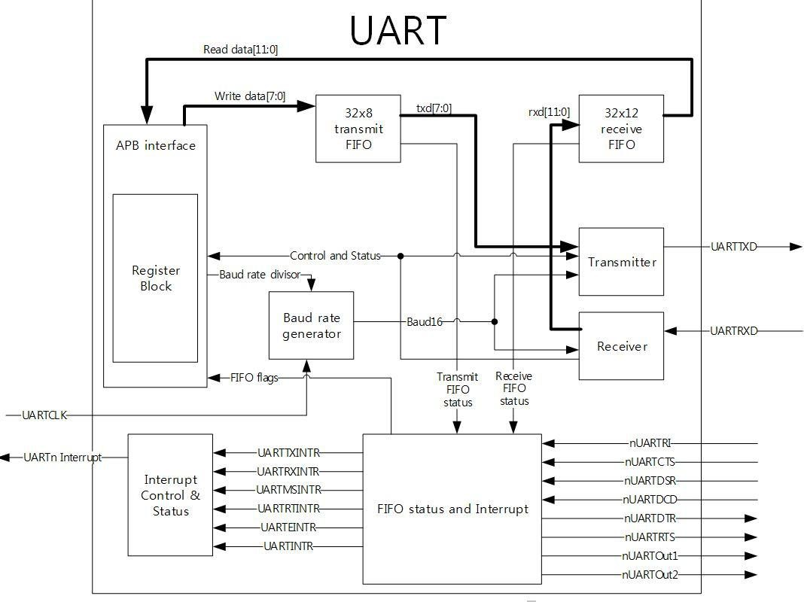
UART 控制器通常包含：
- 波特率发生器；
- 发送 FIFO；
- 接收 FIFO；
- 移位寄存器；
- 状态寄存器；
- 中断控制逻辑。
CPU 不需要自己逐位产生 UART 波形。
只需要把数据写入发送 FIFO，UART 硬件就会自动完成串行发送。
6. ESP-IDF UART 初始化
下面以 UART1 为例。
#include "driver/uart.h"
#include "driver/gpio.h"
#define UART_PORT UART_NUM_1
#define UART_TX GPIO_NUM_43
#define UART_RX GPIO_NUM_44
void uart_init(void)
{
uart_config_t config = {
.baud_rate = 115200,
.data_bits = UART_DATA_8_BITS,
.parity = UART_PARITY_DISABLE,
.stop_bits = UART_STOP_BITS_1,
.flow_ctrl = UART_HW_FLOWCTRL_DISABLE,
.source_clk = UART_SCLK_DEFAULT
};
ESP_ERROR_CHECK(
uart_driver_install(
UART_PORT,
2048,
2048,
0,
NULL,
0
)
);
ESP_ERROR_CHECK(
uart_param_config(
UART_PORT,
&config
)
);
ESP_ERROR_CHECK(
uart_set_pin(
UART_PORT,
UART_TX,
UART_RX,
UART_PIN_NO_CHANGE,
UART_PIN_NO_CHANGE
)
);
}这里 GPIO43、GPIO44 是 XIAO 常见的 UART TX/RX 引脚示例，使用前要确认没有被 USB 或其他功能占用。
7. UART 发送数据
void uart_send_example(void)
{
const char *message = "Hello XIAO ESP32S3!\r\n";
uart_write_bytes(
UART_PORT,
message,
strlen(message)
);
}8. UART 接收数据
void uart_receive_example(void)
{
uint8_t buffer[128];
while (1) {
int length = uart_read_bytes(
UART_PORT,
buffer,
sizeof(buffer) - 1,
pdMS_TO_TICKS(1000)
);
if (length > 0) {
buffer[length] = '\0';
printf("UART RX: %s\n", buffer);
}
}
}这里使用字符串方式显示数据，只适合文本协议。对于二进制数据，应按实际长度处理，不要假设接收到的数据以 \0 结束。
9. UART 实际应用
假设连接一个 GPS 模块：
GPS TX
↓
XIAO RX
↓
UART 接收
↓
解析 NMEA 数据
↓
获取经纬度
↓
业务程序GPS 常见 NMEA 数据：
$GPRMC,123519,A,4807.038,N,01131.000,E,...ESP32-S3 接收后，可以解析经纬度、速度和时间。
六、I2C：多设备共用两根线的通信原理
I2C 是非常重要的传感器通信接口。
它特别适合：
- OLED 显示屏；
- 温湿度传感器；
- 气压传感器；
- RTC 时钟；
- IO 扩展芯片；
- EEPROM。
1. I2C 为什么只需要两根线？
I2C 使用：
| 信号 | 作用 |
|---|---|
| SDA | 数据线 |
| SCL | 时钟线 |
多个设备可以连接在同一条总线上。
例如：
XIAO ESP32S3
|
┌───────┴───────┐
| |
SDA SCL
| |
┌────┼────┐ ┌────┼────┐
| | | | | |
OLED RTC 温度传感器 共用总线设备通过地址区分。
2. I2C 地址是什么？
每个 I2C 从设备通常有自己的地址。
例如：
| 设备 | 常见地址 |
|---|---|
| SSD1306 OLED | 0x3C |
| AHT20 | 0x38 |
| BMP280 | 0x76 或 0x77 |
| PCF8574 | 0x20～0x27，取决于配置 |
这些是常见地址示例，具体要以模块配置和数据手册为准。
3. I2C 工作时序
一次典型 I2C 写操作：
START
↓
从设备地址 + 写方向
↓
ACK
↓
寄存器地址
↓
ACK
↓
数据
↓
ACK
↓
STOP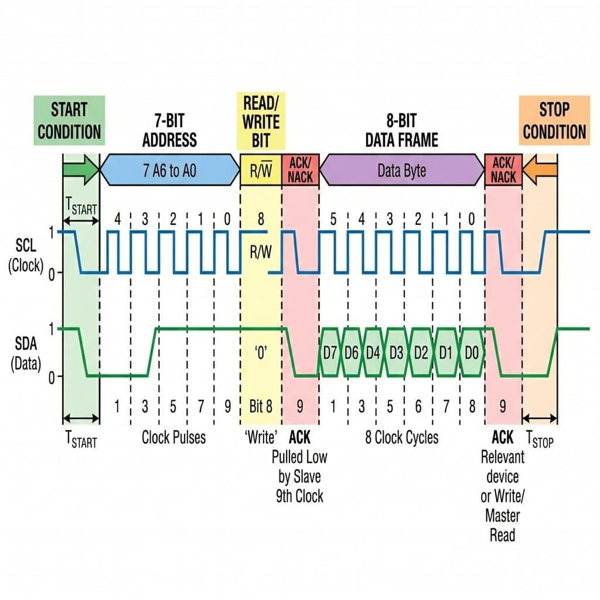
这里需要理解几个关键概念：
- START：开始通信；
- STOP：结束通信；
- ACK：接收方确认；
- NACK：接收方未确认；
- Address：从设备地址；
- Data：实际传输数据。
4. 为什么 I2C 需要上拉电阻？
I2C SDA 和 SCL 通常使用开漏或开集电极结构。
设备可以主动拉低总线，但不直接主动输出高电平。
总线通过上拉电阻恢复到高电平。
3.3V
|
上拉电阻
|
SDA ───── 多个设备因此没有合适的上拉电阻，I2C 可能无法正常通信。
很多开发模块已经集成上拉电阻，但多个模块同时连接时，上拉电阻可能并联得过小，需要检查总线实际电气情况。
5. XIAO ESP32S3 I2C 接线
普通版 XIAO 常用：
| XIAO | GPIO | I2C |
|---|---|---|
| D4 | GPIO5 | SDA |
| D5 | GPIO6 | SCL |
| 3V3 | — | 电源 |
| GND | — | 地 |
6. ESP-IDF I2C 主机初始化
ESP-IDF 5.x 推荐使用新的 I2C Master API。
#include "driver/i2c_master.h"
#define I2C_SDA GPIO_NUM_5
#define I2C_SCL GPIO_NUM_6
static i2c_master_bus_handle_t bus_handle;
void i2c_init(void)
{
i2c_master_bus_config_t bus_config = {
.i2c_port = I2C_NUM_0,
.sda_io_num = I2C_SDA,
.scl_io_num = I2C_SCL,
.clk_source = I2C_CLK_SRC_DEFAULT,
.glitch_ignore_cnt = 7,
.flags.enable_internal_pullup = true
};
ESP_ERROR_CHECK(
i2c_new_master_bus(
&bus_config,
&bus_handle
)
);
}注意：内部上拉只能作为辅助，实际硬件通常应根据总线电容和速率配置外部上拉电阻。
7. 添加一个 I2C 设备
static i2c_master_dev_handle_t oled_handle;
void oled_device_add(void)
{
i2c_device_config_t device_config = {
.dev_addr_length = I2C_ADDR_BIT_LEN_7,
.device_address = 0x3C,
.scl_speed_hz = 400000
};
ESP_ERROR_CHECK(
i2c_master_bus_add_device(
bus_handle,
&device_config,
&oled_handle
)
);
}8. 向 I2C 设备发送数据
uint8_t data[] = {
0x00,
0xAE
};
ESP_ERROR_CHECK(
i2c_master_transmit(
oled_handle,
data,
sizeof(data),
1000
)
);这个示例发送的是 OLED 常见的显示关闭命令，不是完整 OLED 初始化程序。
9. I2C 调试方法
如果 OLED 没有显示，按照以下顺序检查：
- 检查 3.3V 供电。
- 检查 GND 是否共地。
- 检查 SDA 和 SCL 是否接反。
- 检查 I2C 地址。
- 检查上拉电阻。
- 检查通信速率。
- 使用逻辑分析仪查看 START、ACK 和 STOP。
掌握逻辑分析仪，是从普通嵌入式开发走向底层驱动开发的重要一步。
七、SPI：高速外设通信的工作原理
SPI 是 ESP32-S3 中非常重要的高速通信接口。
如果以后要连接：
- TFT 彩色显示屏；
- LCD；
- 外部 Flash；
- SD 卡；
- 高速 ADC；
- 其他 MCU；
通常都会接触 SPI。
1. SPI 的四根信号线
| 信号 | 全称 | 功能 |
|---|---|---|
| SCLK | Serial Clock | 时钟 |
| MOSI | Master Out Slave In | 主机发送数据 |
| MISO | Master In Slave Out | 主机接收数据 |
| CS | Chip Select | 选择从设备 |
2. SPI 工作过程
假设 XIAO ESP32S3 要向 TFT 屏幕发送数据：
XIAO ESP32S3
|
| SCLK
| MOSI
| CS
↓
TFT 屏幕工作流程：
- 主机拉低 CS。
- 主机产生 SCLK 时钟。
- 主机通过 MOSI 发送数据。
- 从设备根据时钟采样数据。
- 通信结束，CS 拉高。
SPI 是同步通信，时钟由主机提供。
3. SPI 的四种工作模式
SPI 有四种常见模式：
| 模式 | CPOL | CPHA |
|---|---|---|
| Mode 0 | 0 | 0 |
| Mode 1 | 0 | 1 |
| Mode 2 | 1 | 0 |
| Mode 3 | 1 | 1 |
CPOL 决定时钟空闲电平。
CPHA 决定在哪个时钟边沿采样。
如果主机和从设备模式不一致，就可能出现数据错误。
4. XIAO ESP32S3 常用 SPI 引脚
| XIAO 引脚 | GPIO | 功能 |
|---|---|---|
| D8 | GPIO7 | SCK |
| D9 | GPIO8 | MISO |
| D10 | GPIO9 | MOSI |
CS 通常选择另外一个可用 GPIO。
这些是常见 SPI 引脚映射，实际工程还应检查板级引脚定义和外设占用。
5. ESP-IDF SPI 初始化
#include "driver/spi_master.h"
#define PIN_NUM_MOSI GPIO_NUM_9
#define PIN_NUM_MISO GPIO_NUM_8
#define PIN_NUM_CLK GPIO_NUM_7
#define PIN_NUM_CS GPIO_NUM_1
static spi_device_handle_t spi_handle;
void spi_init(void)
{
spi_bus_config_t bus_config = {
.mosi_io_num = PIN_NUM_MOSI,
.miso_io_num = PIN_NUM_MISO,
.sclk_io_num = PIN_NUM_CLK,
.quadwp_io_num = -1,
.quadhd_io_num = -1,
.max_transfer_sz = 4096
};
ESP_ERROR_CHECK(
spi_bus_initialize(
SPI2_HOST,
&bus_config,
SPI_DMA_CH_AUTO
)
);
spi_device_interface_config_t device_config = {
.clock_speed_hz = 10 * 1000 * 1000,
.mode = 0,
.spics_io_num = PIN_NUM_CS,
.queue_size = 4
};
ESP_ERROR_CHECK(
spi_bus_add_device(
SPI2_HOST,
&device_config,
&spi_handle
)
);
}6. SPI 发送数据
void spi_send_example(void)
{
uint8_t data[] = {
0xAA,
0x55,
0x12,
0x34
};
spi_transaction_t transaction = {
.length = sizeof(data) * 8,
.tx_buffer = data
};
ESP_ERROR_CHECK(
spi_device_transmit(
spi_handle,
&transaction
)
);
}7. SPI 为什么比 I2C 快？
主要原因：
- SPI 使用专用时钟线；
- 不需要每个字节都进行 I2C 地址和 ACK 处理；
- 支持较高时钟频率；
- 可以使用 DMA 连续传输大量数据。
但是实际速度还受外设、线路长度、信号完整性、驱动和 DMA 缓冲区限制。
8. SPI 和 I2C 应该如何选择？
| 对比 | I2C | SPI |
|---|---|---|
| 信号线 | 2 根 | 通常 3～4 根 |
| 设备识别 | 地址 | CS |
| 通信时钟 | SCL | SCLK |
| 典型速度 | 100/400kHz 等 | 通常数 MHz 到数十 MHz，视设备而定 |
| 适用设备 | 传感器、OLED | TFT、SD 卡、Flash |
| 硬件复杂度 | 较低 | 较高 |
对于 XIAO 项目：
- 小型传感器优先考虑 I2C；
- 彩色屏幕优先考虑 SPI；
- 大量数据传输优先考虑 SPI + DMA。
八、LEDC：PWM 脉冲宽度调制
LEDC 是 ESP32-S3 的 PWM 控制器。
它可以让 GPIO 输出一定频率和占空比的脉冲。
常见应用：
- LED 亮度控制；
- 电机调速；
- 蜂鸣器；
- 舵机控制；
- 风扇控制。
1. PWM 是什么？
PWM 全称 Pulse Width Modulation。
例如：
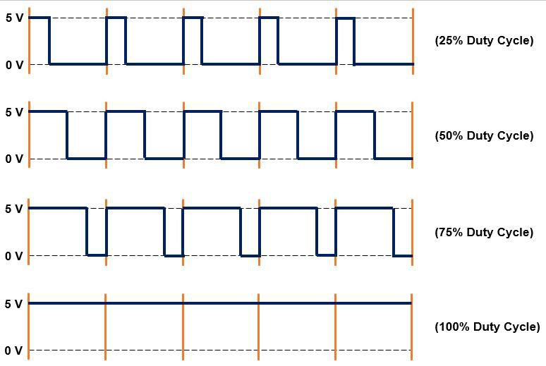
占空比定义：
例如：
- 25%：高电平占周期的四分之一；
- 50%：高低电平时间相等；
- 75%：高电平占周期的四分之三。
2. LED 为什么可以通过 PWM 调节亮度？
当 LED 以足够高的频率快速开关，人眼感知的是平均亮度。
例如：
| 占空比 | 视觉效果 |
|---|---|
| 10% | 较暗 |
| 30% | 较低亮度 |
| 50% | 中等亮度 |
| 80% | 较亮 |
| 100% | 持续点亮 |
3. ESP-IDF LEDC 初始化
#include "driver/ledc.h"
#define PWM_GPIO GPIO_NUM_1
void pwm_init(void)
{
ledc_timer_config_t timer_config = {
.speed_mode = LEDC_LOW_SPEED_MODE,
.duty_resolution = LEDC_TIMER_10_BIT,
.timer_num = LEDC_TIMER_0,
.freq_hz = 5000,
.clk_cfg = LEDC_AUTO_CLK
};
ESP_ERROR_CHECK(
ledc_timer_config(&timer_config)
);
ledc_channel_config_t channel_config = {
.gpio_num = PWM_GPIO,
.speed_mode = LEDC_LOW_SPEED_MODE,
.channel = LEDC_CHANNEL_0,
.intr_type = LEDC_INTR_DISABLE,
.timer_sel = LEDC_TIMER_0,
.duty = 0,
.hpoint = 0
};
ESP_ERROR_CHECK(
ledc_channel_config(&channel_config)
);
}4. 调节 PWM 占空比
10 位分辨率意味着：
占空比取值范围为 0～1023。
void set_brightness(uint32_t duty)
{
if (duty > 1023) {
duty = 1023;
}
ESP_ERROR_CHECK(
ledc_set_duty(
LEDC_LOW_SPEED_MODE,
LEDC_CHANNEL_0,
duty
)
);
ESP_ERROR_CHECK(
ledc_update_duty(
LEDC_LOW_SPEED_MODE,
LEDC_CHANNEL_0
)
);
}例如：
set_brightness(512);大约就是 50% 占空比。
九、RMT：精确控制脉冲和时序
RMT 是 ESP32-S3 一个非常实用的外设。
它适合生成和接收精确的数字脉冲序列。
典型应用：
- WS2812 RGB 灯带；
- 红外遥控；
- 红外接收；
- 单线通信；
- 特定时序协议。
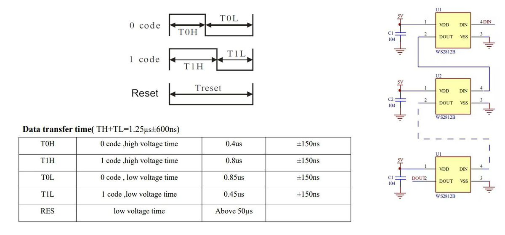
1. 为什么 RMT 很有用？
假设需要控制 WS2812 灯珠。
它要求非常精确的高低电平时间。
如果完全依赖 CPU：
GPIO 拉高
等待一段时间
GPIO 拉低
等待一段时间可能因为任务切换或中断导致时序不稳定。
RMT 可以将脉冲时序交给硬件完成。
CPU 只需要准备好脉冲数据。
2. RMT 的工作原理
应用程序
↓
准备脉冲数据
↓
RMT 编码
↓
RMT 内部存储和 DMA（按配置）
↓
硬件自动输出脉冲
↓
外部设备3. 为什么 WS2812 适合 RMT？
WS2812 使用单线数据传输。
每个数据位通过高电平和低电平的持续时间来表示 0 或 1。
例如：
逻辑 0：
高电平较短
低电平较长
逻辑 1：
高电平较长
低电平较短RMT 可以准确控制这些时间。
4. ESP-IDF RMT 开发
新版 ESP-IDF 使用：
#include "driver/rmt_tx.h"
#include "driver/rmt_encoder.h"主要步骤：
- 创建 RMT TX Channel。
- 配置 GPIO。
- 配置时钟分辨率。
- 创建编码器。
- 准备发送数据。
- 调用发送 API。
- 等待发送完成。
官方资料：
十、本课的知识关联：如何选择正确的外设？
现在我们已经学习了 GPIO、UART、I2C、SPI、PWM 和 RMT。
实际开发时，可以按照下面的原则选择：
| 需求 | 推荐外设 |
|---|---|
| 控制普通 LED | GPIO |
| 读取按钮 | GPIO / 中断 |
| 连接 GPS | UART |
| 连接温湿度传感器 | I2C |
| 连接 OLED | I2C 或 SPI |
| 连接 TFT 彩屏 | SPI |
| 控制 LED 亮度 | LEDC |
| 控制 WS2812 | RMT |
| 控制舵机 | LEDC |
| 高速传输数据 | SPI + DMA |
| 数字音频 | I2S + DMA |
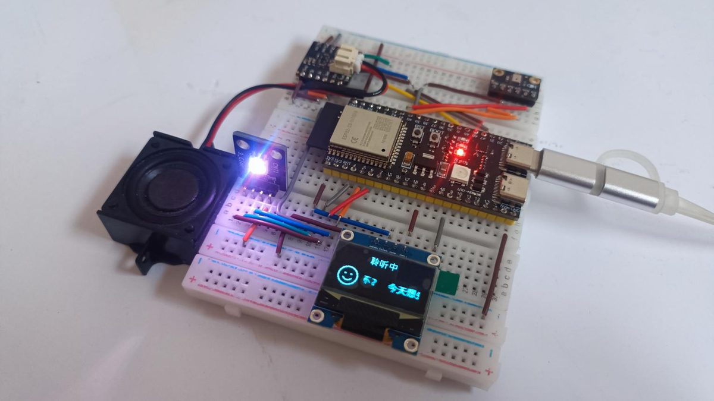
- OLED：显示设备状态；
- I2C：读取温湿度；
- I2S：录制语音；
- SPI：连接彩色屏幕；
- UART：连接外部通信模块；
- LEDC：控制指示灯亮度；
- RMT：控制 RGB 灯带；
- GPIO 中断：处理按键。
这里最重要的是先做好 GPIO 资源规划，不能只看软件 API 是否支持，还要考虑物理引脚是否足够。
十一、本课实践任务
建议按照顺序在普通版 XIAO ESP32S3 上完成。
十二、下一课：ADC、GPTimer、DMA 与硬件实时控制
第十二课：模拟信号采集与实时数据处理
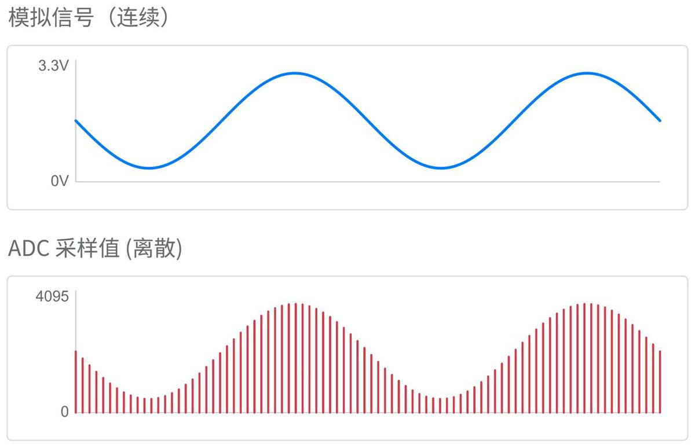
- ADC 的工作原理。
- SAR ADC 逐次逼近转换过程。
- ESP32-S3 ADC1 与 ADC2。
- ADC 校准与非线性误差。
- 电压、电流和传感器采集。
- GPTimer 硬件定时器。
- 定时器中断与任务通知。
- ADC 连续采样。
- DMA 数据搬运。
- 环形缓冲区和实时数据处理。
- 如何构建稳定的数据采集系统。
这一课将把前面学习的 ADC、寄存器、中断、FreeRTOS 和 DMA 真正组合起来。
最终目标：让 XIAO ESP32S3 不只是能够控制外设，还能稳定、准确、连续地采集外部世界的数据。